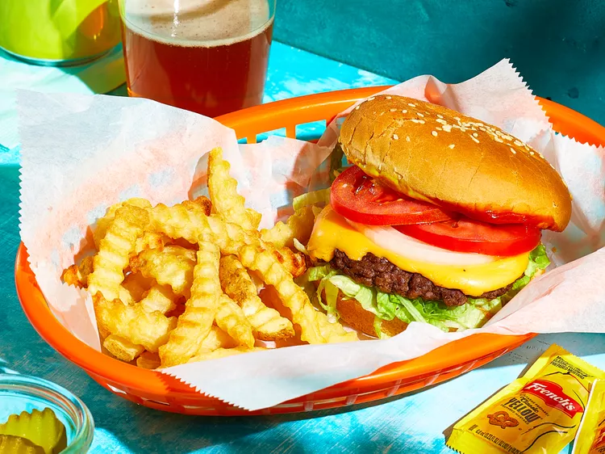

Smash Burger Recipe

Ingredients
- 4 hamburger buns
- 2 tablespoons butter, softened, or as needed
- 1 pound ground chuck beef (80% lean)
- 4 (6-inch) squares parchment paper
- salt to taste
- 4 slices American cheese
- burger toppings of choice
How to prepare
- Prepare and heat the griddle.
- Butter and brown the buns.
- Form the meat into loosely-packed balls.
- Place each ball on the grill, cover with a piece of parchment, and smash.
- Sprinkle the meat with salt.
- Grill and assemble the smash burgers according to the detailed instructions below.